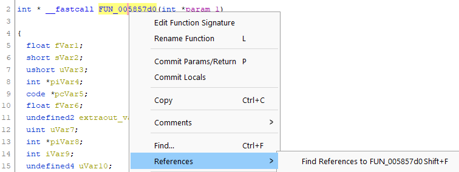

Find the hierarchy of the program
To understand what does a part of the program , it is never a bad thing to understand what it does globally.
Indeed, a program will have key sections like:
- the entry point
- the main loop
- inputs handling
- the game logic
- rendering
The entry point
.exe files have a common entry point named entry.
.DLL files will most likely have an init entry point.
Searching more locally
Getting the entry point is all good, but not necessarily what you need especially if you are looking for the logic of class methods.
Click on a function and hit Shift+F and explore which functions call the one you selected. If there is only one result, you're most probably on a good track, else you will have to dig around.



Here, it is called by a pointer of a vtable.
If you are looking for the main logic, then better find another function to start from.